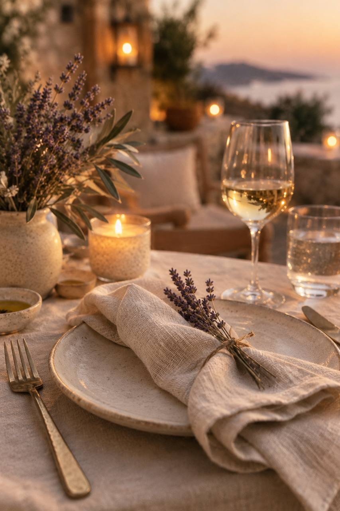
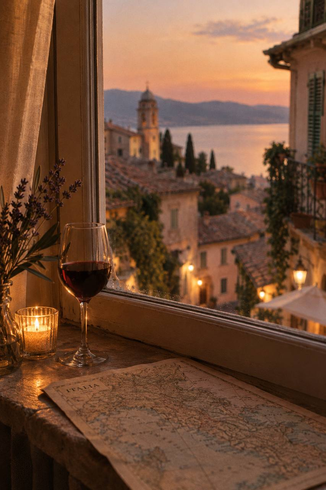
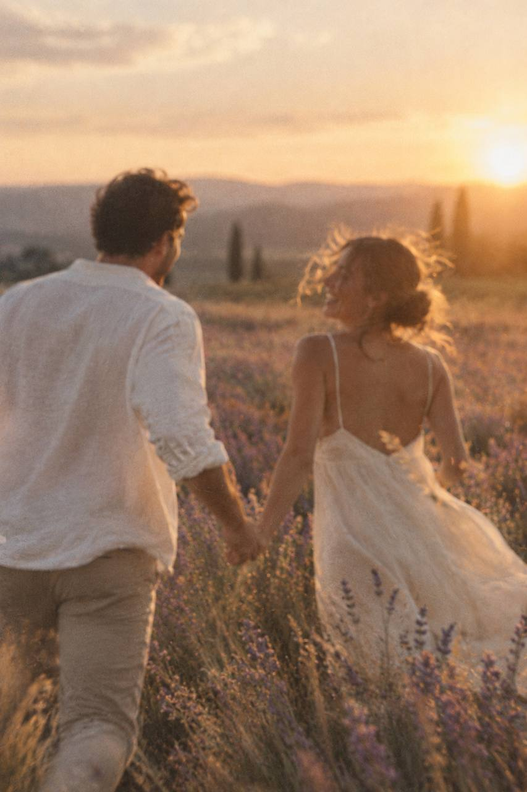

Услуги 1
Событие под ключ. Берём на себя всё: от концепции до уборки. Вы просто приходите и наслаждаетесь.

Событие под ключ. Берём на себя всё: от концепции до уборки. Вы просто приходите и наслаждаетесь.

Путешествие-впечатление. Не тур, а сценарий: локальные винодельни, закрытые галереи, ужины с шефами.

Съёмка атмосферы. Фотограф и видеограф, которые умеют ловить не позы, а эмоции.
| # | Услуга | Формат | Стоимость |
|---|---|---|---|
| 1 | «Тихий день» | Организация камерного события. Что входит: подбор локации (лофт, терраса, загородный дом), флористика, кейтеринг, координатор на месте. Мы намеренно не делаем «шумные банкеты» — этот формат для тех, кто ценит тишину и внимание друг к другу. |
от 60 000 ₽ | 2 | «Маршрут мечты» | Авторское путешествие. Что входит: разработка логистики, бронирование бутик-отелей, 2–3 «небанальных» впечатления (ужин на винодельне, прогулка с гидом-историком, мастер-класс у местного ремесленника). |
от 25 000 ₽ | 3 | «Мечта в кадре» | Фотосопровождение Что входит: 4 часа съёмки, 50 обработанных кадров, помощь с позированием (но без «постановочных улыбок»). Работаем в естественном свете и в любимом нами «журнальном» стиле. |
от 35 000 ₽ | 4 | «Подарок-впечатление» | Конструктор Что входит: вы выбираете «эмоцию» (романтика, приключение, гастрономия), мы собираем коробку: сертификаты, маршрут, физические артефакты (свеча, открытка, чай). Отличный вариант, если нужно подарить не вещь, а воспоминание. |
от 12 000 ₽ |